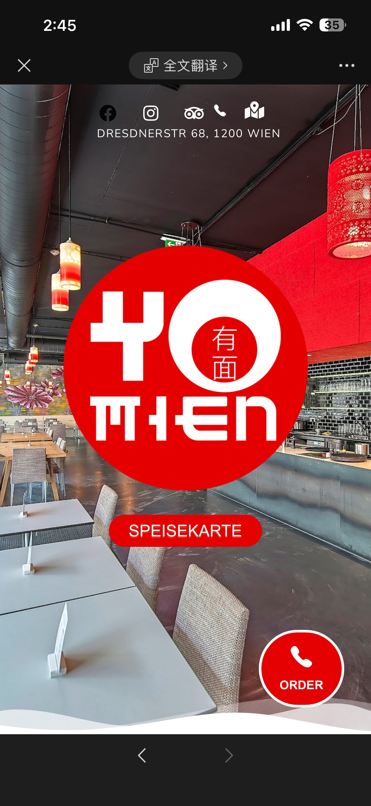
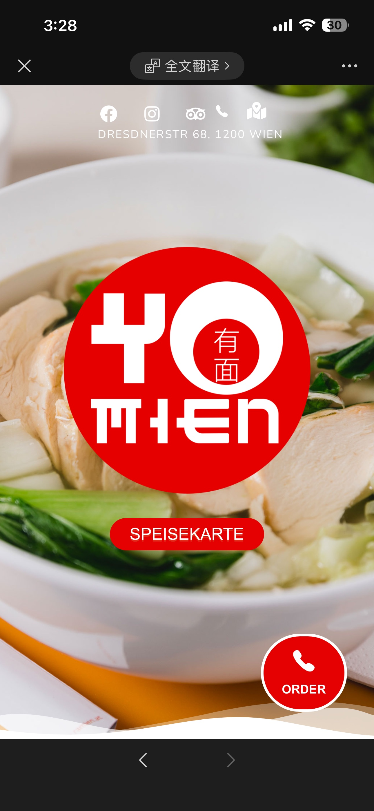
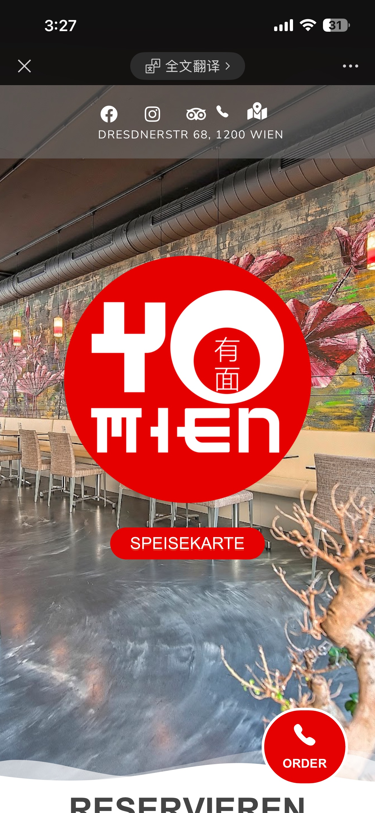

Restaurant · Wien
Die Abendkarte enthält zusätzlich Vorspeisen, Dim Sum, Go Pasta, gebratene Nudeln, Udon, Currygerichte, Hauptspeisen, Reisschalen, Poké, Salate, Extras und Desserts.
Lunch
Dinner